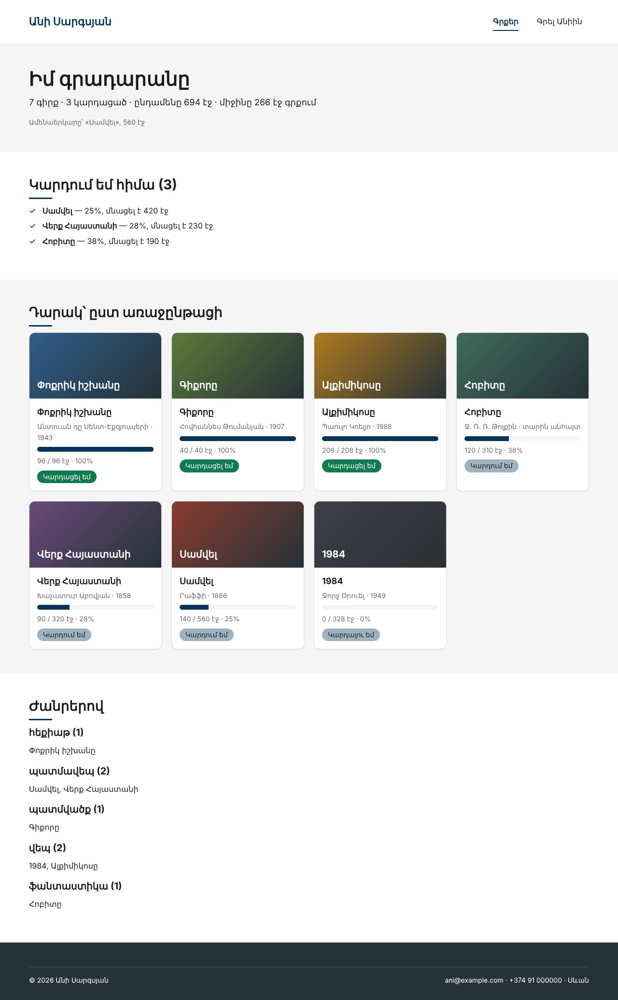

Տնային աշխատանք · PHP Դաս 04 · մինի-նախագիծ
Այս դասին նոր կոդ չենք գրում․ վերանայում ենք եղածը։ Ստեղծում ես context.txt՝ նախագծի նկարագրություն AI-ի համար, երեք պրոմպտ հինգ բաղադրիչով, և functions.php-ը անցնում ես «վերանայման ռեժիմով»։ Ամեն ուղղում անում ես ԻՆՔԴ և ստուգում data.php-ում։
Դաս 01–04․ Դաս 03-ի կոդը և AI գործիքները։ AI-ին թույլ չենք տալիս վերաշարադրել ֆայլը կամ առաջարկել Laravel, PDO և այլ դեռ չանցած թեմաներ (դա գրված է context.txt-ի «ԱՐԳԵԼՔՆԵՐ»-ում)։

Շարունակիր քո նախագիծը։ Եթե բաց ես թողել նախորդ դասը, սկսիր Դաս 03-ի օրինակից։
Այս դասին starter չկա․ աշխատում ես քո կոդի վրա։
| Գործարկել |
|---|
php -S localhost:8000 |
ՆԱԽԱԳԻԾ
«Անիի գրքերը»՝ ընթերցանության օրագիր Անի Սարգսյանի անձնական կայքում։
Ցույց է տալիս գրքերի դարակը, կարգավիճակները (կարդալու եմ / կարդում եմ / կարդացել եմ),
առաջընթացը էջերով և վիճակագրությունը։ Ուսումնական նախագիծ, PHP բլոկ, Դաս 04։
ՍՏԵԿprompts.md՝ նոր ֆունկցիա, բացատրություն, վերանայումfunctions.php-ը և խնդրիր գտնել եզրային դեպքեր, ՈՉ վերաշարադրելdata.php-ում ավելացրու «վատ» գիրք (pages = 0, read = 120)review.md-ում՝ աղյուսակով/**
* Դաս 04-ի վերանայումից հետո․
* - pages = 0 → DivisionByZeroError → վերադարձնում ենք 0
* - read > pages (տառասխալ ադմինում) → 120% → սահմանափակում ենք 100-ով
* - read < 0 → -10% → 0
*/
function progress(array $book): int
{
if ($book['pages'] <= 0) {
return 0;
}
$percent = (int) ($book['read'] * 100 / $book['pages']);
return max(0, min(100, $percent));
}context.txt-ում թվարկված են միայն իրական CSS դասերըpages = 0-ով էջը չի ընկնումreview.md-ում ամեն տող ունի «Ստուգեցի» սյունակ| Սխալ | Ինչպես ուղղել |
|---|---|
| AI-ն վերաշարադրեց ամբողջ ֆայլը | Պրոմպտում՝ «Մի վերաշարադրիր․ ցույց տուր խնդիրը և տողը» |
| AI-ն առաջարկեց PDO կամ Laravel | context.txt-ի ԱՐԳԵԼՔՆԵՐ բաժինը պրոմպտի սկզբում չէ |
| Ուղղումը ստուգված չէ | Ամեն ուղղման համար ավելացրու «վատ» գիրք և տես արդյունքը էջում |
Սրանք Դաս 04-ի տնային աշխատանքի կետերն են։ «մինի-նախագծում» նշվածները արդեն կատարել ես վերևի քայլերում՝ Անիի ակումբում։ Մնացածը կատարիր ՏեխնոՄարկետում, ինչպես գրված է դասում։
context.txt-ը՝ նախագծի նկարագրություն, ստեկ, կանոններ, CSS դասեր, արգելքներ։ մինի-նախագծումfunctions.php-ը և անցիր վերանայման ռեժիմով։ Ուղղիր ամեն խնդիր ինքդ։ մինի-նախագծումsortProducts()-ը զրոյից։Երբ բաժին 03-ի բոլոր կետերը նշված են, բացիր օրինակը։ Գտիր մեկ բան, որ դու արել ես այլ կերպ, և մտածիր՝ որն է ավելի հասկանալի և ինչու։ Քո լուծումը կարող է տարբերվել և լինել ճիշտ։